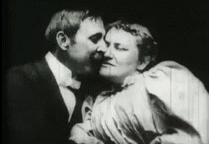

Romance
O romance pode ser definido como um gênero no qual a estória gira em torno do amor entre dois protagonistas. Geralmente explora-se temáticas comuns quando o amor é abordado, incluindo: amor à primeira vista, amor proibido e triângulos amorosos.
É dito que o primeiro registro cinematográfico romântico foi criado por Thomas Edison, em 1986, no título The May Irwin Kiss. O registro foi feito em Nova Jersey, no estúdio de Thomas.
